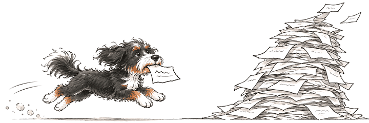

Loading. If nothing appears after a few seconds, the page cannot reach the saved data; answers you already gave are kept in this browser and will be saved when the connection returns.

Your gate answers as JSON. If saving fails, copy this and paste it into the chat.